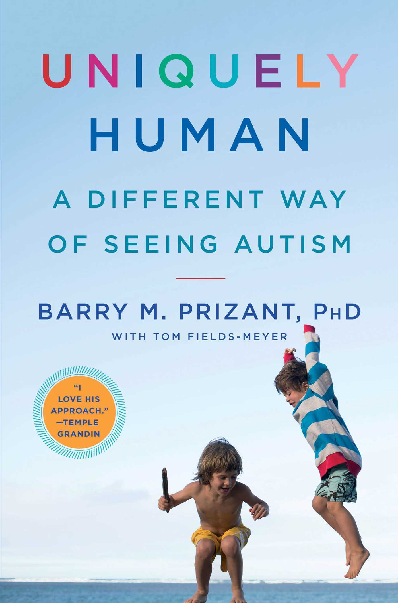

Uniquely Human A Different Way of Seeing Autism
by Barry M. Prizant and Tom Fields-Meyer
Uniquely Human is a groundbreaking book on autism, by one of the world’s leading experts, who portrays autism not as a tragic disability, but as a unique way of being human.
Autism is usually portrayed as a checklist of deficits, including difficulties interacting socially, problems in communicating, sensory challenges, and repetitive behavior patterns. This perspective leads to therapies focused on ridding individuals of “autistic” symptoms. Now Dr. Barry M. Prizant, an internationally renowned autism expert, offers a new and compelling paradigm: the most successful approaches to autism don’t aim at fixing a person by eliminating symptoms, but rather seeking to understand the individual’s experience and what underlies the behavior.